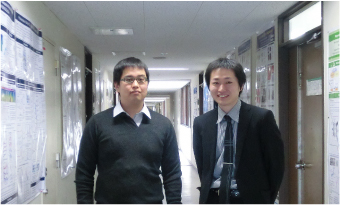
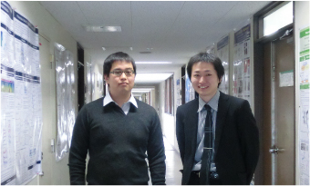

平成 22 年度 学位論文公聴会
広島大学大学院理学研究科で 18 日、学位論文公聴会が行われた。光物性研究室に在籍し、博士課程で研究を積み重ねてきた安齋と上野が研究成果を発表した。
安齋 太陽
「Low-Energy Angle-Resolved Photoemission Study of High-Tc Superconductor Bi2Sr2CaCu2O8+δ」
（高温超伝導体 Bi2Sr2CaCu2O8+δ の低エネルギー角度分解光電子分光）
上野 哲朗
「Magnetism, Atomic and Electronic Structures of Fe and Pd/Fe Ultrathin Films on Pd(001)」
（Pd(001)上のFeおよびPd/Fe超薄膜の磁性，原子構造と電子構造）

左、上野哲朗 右、安齋太陽
「Low-Energy Angle-Resolved Photoemission Study of High-Tc Superconductor Bi2Sr2CaCu2O8+δ」
（高温超伝導体 Bi2Sr2CaCu2O8+δ の低エネルギー角度分解光電子分光）
「Magnetism, Atomic and Electronic Structures of Fe and Pd/Fe Ultrathin Films on Pd(001)」
（Pd(001)上のFeおよびPd/Fe超薄膜の磁性，原子構造と電子構造）

左、上野哲朗 右、安齋太陽